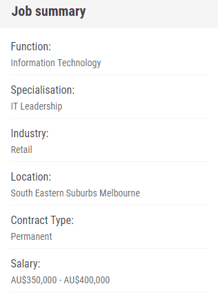
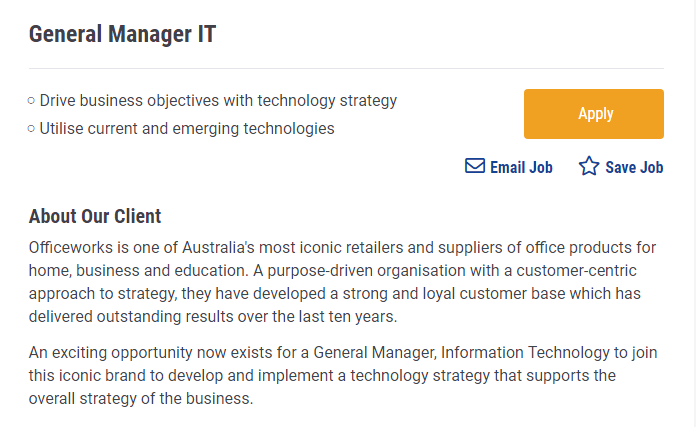
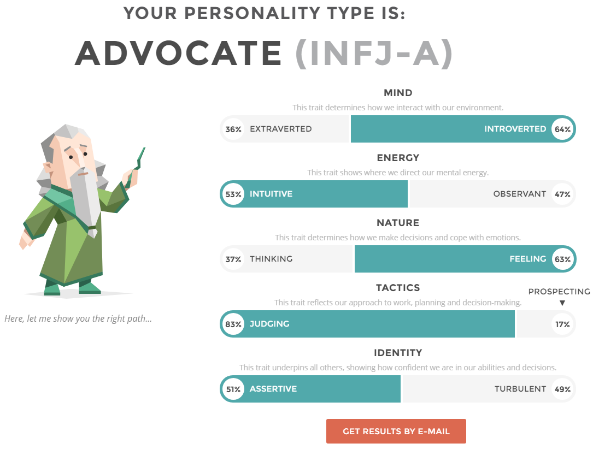
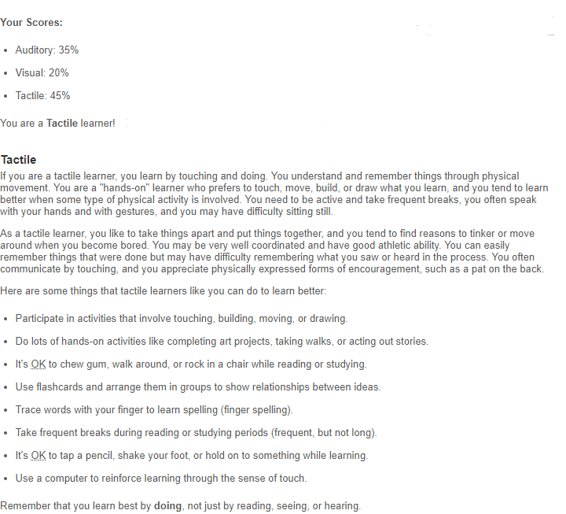
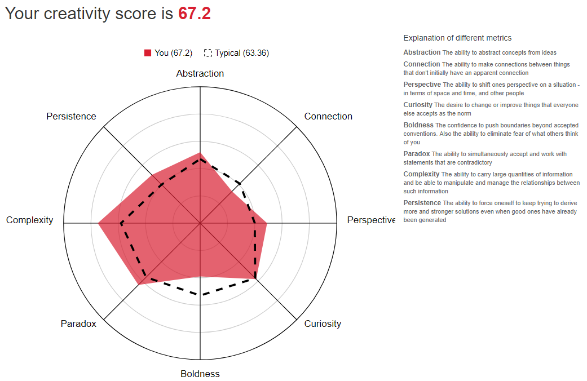
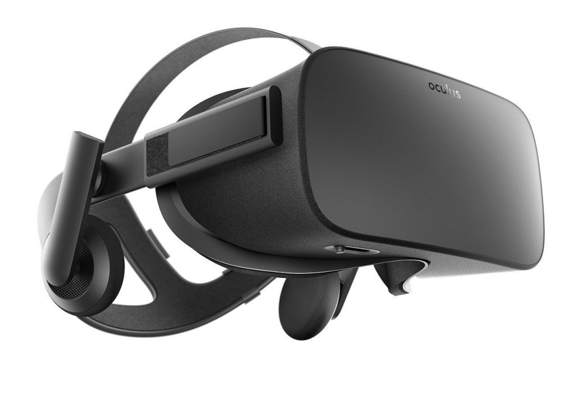

Information
Kye Scoble
Kye.Scoble@gmail.com
S3780157@student.rmit.edu.au
Australian Citizen
Graduated Year 12 VCE at Catherine McAuley College
Currently studying a Bachelor of Information Technology at RMIT
Languages spoken: English (Main) and Auslan (Basic)
Interests in Information Technology
- What is your interest in IT?
I am interested in IT as I enjoy designing and programming a variety of applications as well as how it has a high percentage of problem solving which can be challenging and exciting. I am interested in being involved with the development of things such as applications, games and technology. I am interested in IT as it has so many possibilities of what can be developed and how it is now a part of everyone’s everyday life.
- When did your interest in IT start?
I have been using technology since I was a child, I started by playing video games which then towards the end of primary school became an interest in making programs. During high school I found that the classes I enjoyed the most were my IT classes. I took many IT classes which were my favourite and the classes I could concentrate the most in.
- Was there a particular event or person that sparked your interest?
My interest in IT grew over time from playing video games, learning how to use computers, taking many classes and playing many sports that lead to me having found an interest in computers and designing programs and games.
- Outline your IT experience (if any):
I have taken classes in Computing, Games Development, Robotics, VCE 1/2 Computing, VCE 3/4 Software Development and Systems Engineering. These are all classes I took at high school and learned to program, design and build IT systems.
- Why did you choose to come to RMIT?
I chose to go to RMIT because it was highly recommended to me by family and friends. After going to the open days, I enjoyed seeing the facilities and thought that RMIT’s location was convenient and would make life easier if I had easy access to shops, home and school. After sitting in on course lectures for each of my university options I found that I believed RMIT was best for me and my learning style.
- What do you expect to learn during your studies?
I am expecting to learn more programming techniques, how to work in groups for IT and an understanding of how IT businesses/jobs work and their processes. I hope to develop my oral presentation skills and team work. I also hope to fully figure out what I would like as a future job.
Ideal Job


Job & Appeal:
This Job is a leadership position involving the use of new technologies to determine the businesses strategy for products and services. Working as a part of a large team to determine a vision for the business that will link in with the company’s overall direction, and many more tasks. This appeals to me as I want to work towards an IT leadership position that’s allows me a large amount of decision making and teamwork that has very good pay. This job is also located somewhere I would be happy to work and seems as if I would be able to work from home if I needed.
Required Qualifications:
This job requires the candidate to have exceptional leadership skills and communication, and the ability to think strategically. Also, to have strong project management skills and experience in a similar position in management. An applicant should also have technology experience with business performance and growth. Previous history of technology strategies and applications that support whole business strategies.
My Qualifications:
Good leadership ability
Ability to plan
Good team communication
In-depth knowledge of computer systems
Experience with many IT systems
Experience with programming
Classes in programming ( visual basic, C#, java and unity)
Experience working in a team
Experience talking in front of groups of people
Plan to obtain Qualifications:
I plan to complete my Bachelors of IT as well as complete some courses for Certs for technology and to gain experience, I plan to take opportunities for public speaking to become less nervous and practice and develop. I also plan to learn more programming techniques to understand more possibilities. Taking jobs in areas to work with businesses directions and IT systems.
Personal Profile
Myers-Briggs Test:

Myers-Briggs test results: https://www.16personalities.com/free-personality-test
Learning Style Test:

http://www.educationplanner.org/students/self-assessments/learning-styles-quiz.shtml?event=results&A=7&V=4&T=9
Creativity Test:

http://www.testmycreativity.com/
Test results meaning:
I believe these results give more of an insight on how I may see certain things and how I may act in certain situations. These results may help someone decide if they would work well with me or not. The results may also help me to see the areas in which I could improve myself for any goals I may have. Although the results may not be 100% accurate, they do allow for insight and improvement where needed.
Results effect on my team behaviour:
Looking at my results, I can see areas that I may have to work on or put more effort into so I can be more helpful in group projects and show leadership if needed.
Results when making a team:
I believe I should look for others who have similar results to me as well as different results for a balance between qualities and for a range of different views.
Project Idea
Texty Text Text .
Overview:
Using a Virtual Reality headset to help strengthen a person’s amblyopia (lazy eye) and strabismus (Cross-eyes) as well as help strengthen a user’s weaker eye by having multiple exercises/games that display separate images on each screen to increase the use of the user’s weaker eye while the stronger eye has to assist. This is working towards the eyes working together rather than one being shut out more than the other.

Motivation:
I just found this idea to be interesting after my optometrist told me about how VR is being used to treat people and help people. After hearing how places are working on this idea I wanted to look into, yet this treatment has not been implemented in most places due to the cost of a VR headset. I wanted to look into ways to make it cheaper, which is becoming more possible with headsets such as the Oculus go and gear VR, which don’t require a computer. I also hope for VR to grow into a much larger community as there are so many possibilities for VR to grow into.
Description:
An application for multiple types of VR headsets that has multiple exercises to help strengthen the user’s weaker eye. This can be does through exercises that require the weaker eye to work harder and complete exercises, while the stronger eye assists. This can be done by making the screen brighter for the weaker eye so the brain focuses on it more and dull the screen for the stronger eye so it is being focused on less.
Tools and Technologies:
A VR headset
A computer (Depending on headset type)
A phone (Depending on headset type)
Skills Required:
An understanding on how a VR headset works
Ability to program
Understanding of the human eye with connection to the brain
Feasibility:
This project would be possible as it has been successful at other places which have implemented it. the UVEA clinic in Martin, northern Slovakia, has treated 300 people since 2015, previous treatments showed hope for improvement for children under 7, however wasn’t effective for adults. This new treatment they put in place using VR has shown hope for improvement for many people. However, this treatment is not being widely used as VR can be quite costly. So, I hope to find ways to make this more affordable and efficient.
Outcome:
If this project was successful it could lead to more accessible treatment for people with amblyopia and strabismus, as optometrists could implement this technology into their offices with less cost and difficulty. This could also lead to a growth in VR applications and development teams as people begin to learn more about the possibility’s VR holds.